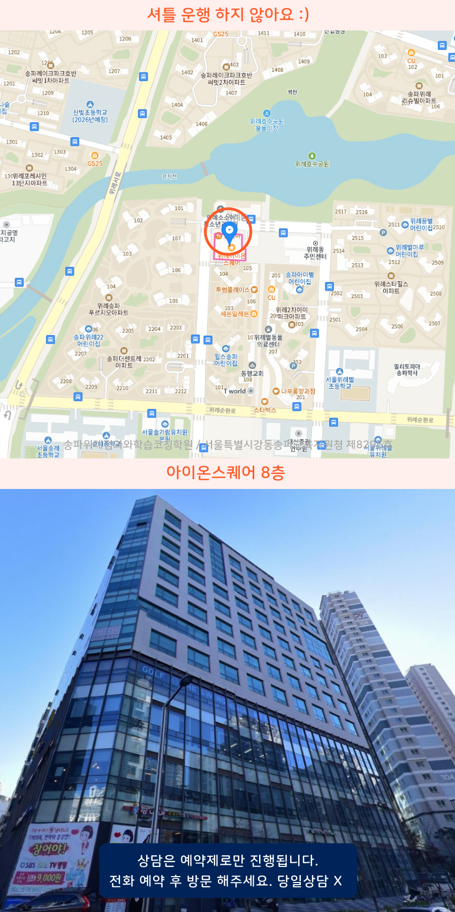

Area
거여동 중등영어학원
거여동과 아이온스퀘어 인근에서 중학생 영어를 준비하려는 분들은 기초 문장부터 문법과 독해 흐름을 함께 잡는 방식이 편합니다. 송파장지동과 송파위례 쪽에서도 과제 관리와 수업 복습 루틴을 세워가며 실수를 줄이는 상담을 많이 찾고요. 수업 시간에 배운 내용을 바로 확인하는 짧은 테스트가 있어 학습 진도를 스스로 점검하기 좋습니다.
Area
거여동과 아이온스퀘어 인근에서 중학생 영어를 준비하려는 분들은 기초 문장부터 문법과 독해 흐름을 함께 잡는 방식이 편합니다. 송파장지동과 송파위례 쪽에서도 과제 관리와 수업 복습 루틴을 세워가며 실수를 줄이는 상담을 많이 찾고요. 수업 시간에 배운 내용을 바로 확인하는 짧은 테스트가 있어 학습 진도를 스스로 점검하기 좋습니다.
Schools
거여동 중학생영어학원은 위례중과 위례고 대비로 내신 문법과 서술형을 꼼꼼히 다루며 매주 지문분석과 오답정리로 수업을 학생 수준에 탄탄히 맞춥니다.
Academy
성적이 잘 오르지 않는 이유는 영어를 열심히 하는지보다 공부가 시간에만 쏠리고 있는지에서 자주 시작됩니다. 예를 들어 거여동에서 중등영어학원을 알아보는 가정이라면, 단어와 문법을 한 번 더 본다고 성적이 자동으로 따라오지 않는 이유를 함께 봐야 합니다. 수업을 따라가도 문장 해석이 흔들리면 지문을 읽는 속도와 정확도가 동시에 떨어져 모의고사나 내신에서 변별이 생깁니다.
이럴 때는 송파장지동이나 송파위례처럼 주변 학습 환경이 다양해도 학습 기록이 핵심이 됩니다. 위례별초, 송례초 이후 중학교 과정으로 넘어가며 시험 범위가 넓어질수록 오답의 원인을 문법 실수, 독해 습관, 어휘 부족처럼 분류해야 다음 주에 같은 실수를 반복하지 않습니다. 특히 위례솔중, 송례중처럼 학교별 시험 스타일이 달라지면, 같은 유형을 다른 문항으로 다시 풀어보는 방식이 필요합니다.
거여동에서 중학생영어학원을 찾는 경우라면 학습 코칭이 반드시 필요한 지점도 있습니다. 매일 공부 시간을 정해도 실제로는 이해가 끝난 것처럼 넘어가서 복습이 약해지기 때문입니다. 그래서 위례초, 위례중, 위례고 같은 상급으로 갈수록 플래너에 진도만 적기보다, 오늘의 오답이 왜 틀렸는지와 같은 조건에서 다시 맞히려면 어떤 문장 단위 훈련이 필요한지까지 정리해야 합니다. 덕수고, 문현중, 문현고, 문정고, 보인고, 거원중 일정에 맞춰 주간 단위로 점검하는 과정이 중요해요.
학원을 고를 때는 수업 내용 자체뿐 아니라, 시험 전후로 오답과 학습 계획을 어떻게 연결하는지 확인해 보세요. 특히 내신 범위가 움직일 때 독해 훈련이 어떤 순서로 누적되는지, 학생이 스스로 점검할 수 있게 어떤 기록을 남기는지, 그리고 학교와 시험 스타일 차이를 어떻게 반영하는지도 함께 살펴보면 시행착오가 줄어듭니다.

Programs


어휘 암기부터 문장 해석, 문법 적용, 지문 분석까지 학생의 취약 영역을 중심으로 학습합니다. 학교별 내신 유형을 점검하고 학년이 올라갈수록 필요한 독해력과 문제 해결 능력을 차근차근 키워갑니다.
학생이 어려워하는 개념과 문제 유형을 먼저 파악한 뒤 단계별 문제 풀이를 진행합니다. 풀이 과정에서 반복되는 실수를 점검하고 취약 단원을 다시 학습하며 응용 문제까지 해결할 수 있도록 수학 실력을 탄탄하게 다져갑니다.
교과서 작품과 지문을 정확하게 이해하고 핵심 내용을 스스로 파악하는 연습을 진행합니다. 문학과 독서, 문법 등 영역별 학습과 함께 서술형 및 학교 시험에 필요한 문제 분석 능력을 길러줍니다.
소수 인원으로 수업을 진행하며 학생마다 다른 이해도와 학습 속도를 세심하게 확인합니다. 진도와 과제, 복습 상태를 개별적으로 점검하고 필요한 부분은 추가 피드백을 통해 보완하며 꾸준한 학습 흐름을 만들어갑니다.
Map

APPLY
순차적으로 연락드려 예약 도와드립니다.
Guide
학생의 학년보다 현재 학습 수준을 먼저 확인한 뒤 필요한 부분부터 시작합니다. 이전 학년의 개념이 부족하다면 기초 내용을 다시 정리하고, 충분히 이해한 후 다음 단계로 넘어갈 수 있도록 학습 순서를 조정합니다.
수업 과정에서 문제 풀이와 오답, 과제 결과를 지속적으로 살펴봅니다. 반복해서 어려워하는 단원이나 유형을 찾아 원인을 확인하고, 필요한 개념과 문제를 추가로 학습하며 취약한 부분을 보완합니다.
네. 성적 향상을 위한 과목 학습과 함께 계획을 세우고 실천하는 과정도 중요하게 관리합니다. 정해진 학습량을 꾸준히 수행하고 복습하는 습관을 익혀 학생 스스로 공부를 이어갈 수 있는 힘을 키워갑니다.
| 횟수 | 초등 | 중등 | 고등 |
|---|---|---|---|
| 주 5회 | 339,000원 | 336,000원 | 419,000원 |
| 주 4회 | 279,000원 | 301,000원 | 344,000원 |
| 주 3회 | 219,000원 | 236,000원 | - |
| 횟수 | 초등 | 중등 | 고등 |
|---|---|---|---|
| 주 5회 | 389,000원 | 416,000원 | 469,000원 |
| 주 4회 | 319,000원 | 341,000원 | 384,000원 |
| 주 3회 | 249,000원 | 266,000원 | - |
학년, 과목, 수업 시수, 지역에 따라 수업료가 달라질 수 있습니다.